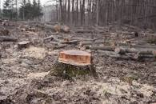

Cientistas do serviço meteorológico da Universidade de Exeter, na Inglaterra, descobriram que em 2019 a concentração de dióxido de carbono na atmosfera do planeta seria uma das mais altas em todo o histórico das observações.
As causas dessa concentração seriam tanto o aumento das emissões antropogênicas como a redução da eficácia da absorção de dióxido de carbono pelos ecossistemas. O resultado das projeções é relatado no portal Phys.org.
Segundo os pesquisadores, o monitoramento atmosférico realizado no Observatório Mauna Loa, no Havaí, mostrou que desde 1958 a concentração de dióxido de carbono na atmosfera aumentou em 30%. O acúmulo é causado pelas emissões da queima de combustíveis fósseis, desmatamento e produção de cimento.